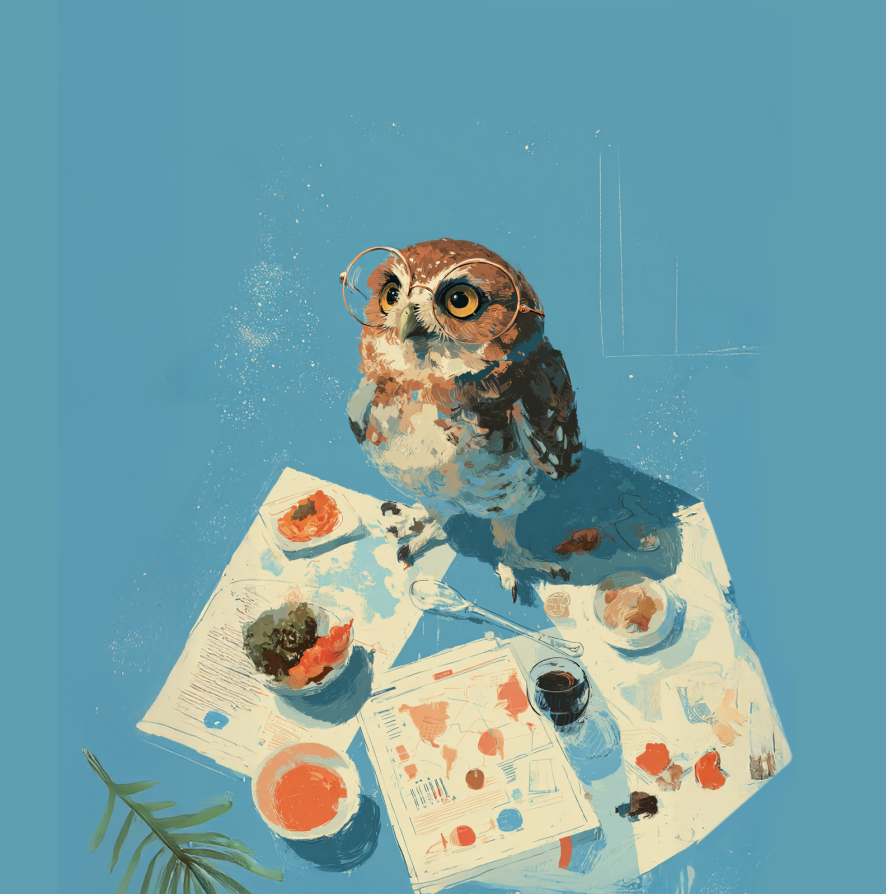
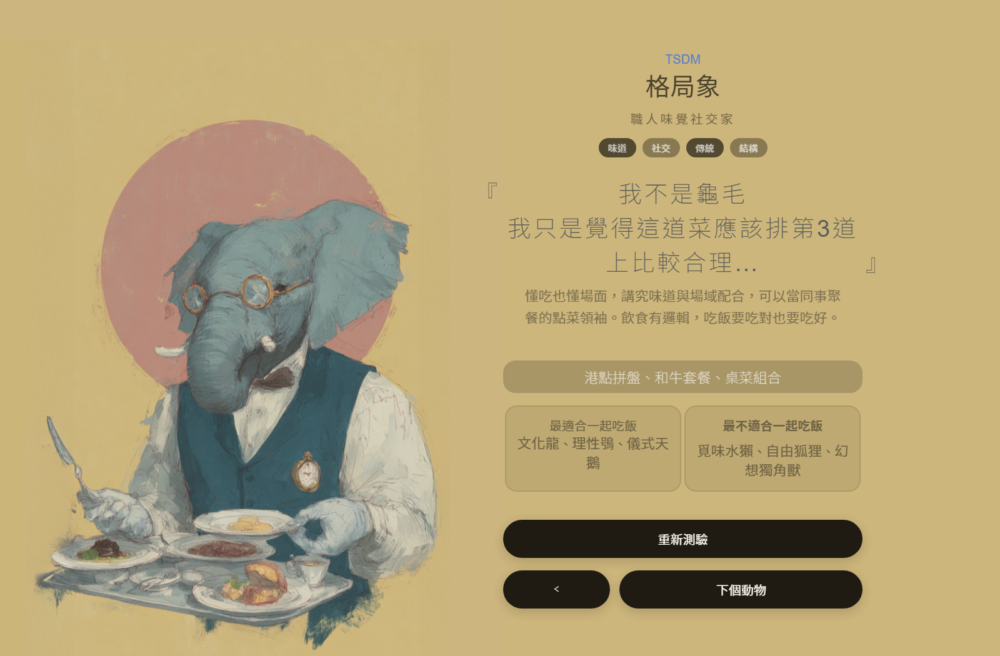
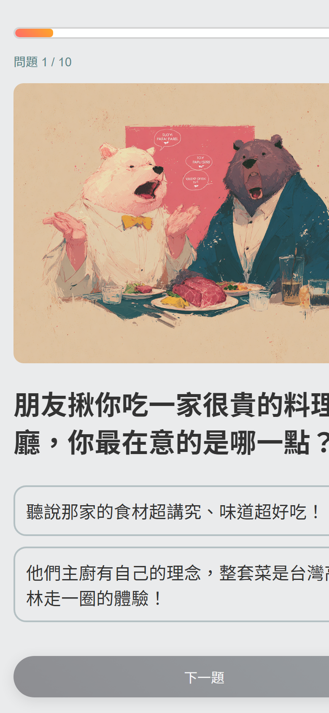

美食動物性格測驗
Side Project
「吃的方式，是不是也能反映一個人的個性？」
起因是同事慶生時的閒聊：大家對吃的偏好差異很大，於是想做一個飲食性格測驗來驗證。
同時也想借這個機會，試試看一個人能不能透過 Generative AI 完成從企劃、插畫到前端開發的完整流程。
過程中主要處理三件事：
• 邏輯設計：參考 MBTI 架構，建立「飲食四象限」積分模型，取代隨機亂數，讓結果有依據。
• 視覺一致性：透過 Midjourney Prompt 反覆測試，讓 16 張角色插畫維持同一套視覺風格。
• 前端實作：用 JSON 權重系統管理題庫與計分邏輯，搭配 HTML/JS 完成 RWD 互動頁面。
我的角色
獨立製作——企劃、Prompt 設計、前端開發、視覺規範
專案類型
互動網頁 · AI 生成插畫 · Side Project
前往測驗頁面 ↗
這個專案的核心問題是：如何讓一個「飲食性格測驗」的結果讓人覺得準、想分享？ 以下是三個主要的設計決策。
三個設計決策
1. 用動物來代表人格
把測驗結果對應到具體的動物形象（如格局象、慢熟貓）， 比起抽象的形容詞，動物更容易記住，也更容易在對話中提起。
2. 每個角色一句「內心獨白」
結果頁最上方放一句角色的代表語錄 （例如：儀式天鵝——「關於甜點的順序，我有個 Excel 表可以解釋」）。 目的是讓人一看就有「是我沒錯」的感覺，也方便截圖分享。
3. 飯友 / 飯局災難配對
每個結果會顯示「最適合一起吃飯的動物」與「最不適合的」， 讓測驗從「看自己的結果」延伸到「去標記朋友」，多了一層社交互動。

格局象
職人味覺社交家

熱情狗
爽感系同樂吃貨

儀式天鵝
嚴謹型創食向導

慢熟貓
宅系味覺療癒師
把「口味」翻譯成「人格」
為了避免測驗流於「隨機亂猜」，引入了 MBTI 架構， 將模糊的飲食偏好轉化為可量化的「四向度模型」。
飲食人格的四個維度
感官 vs. 概念
你吃的是物理美味還是故事氛圍？
社交 vs. 獨處
吃飯是為了連結他人，還是修復自我？
傳統 vs. 冒險
面對「香菜皮蛋披薩」，你是捍衛義大利尊嚴，還是興奮地想試試？
結構 vs. 直覺
點餐時你會精算營養比例，還是看當下心情？
題目設計實例

🧁 公司附近的人氣甜點店裡有兩款新品，你選：
A. 巧克力甜甜圈啊，吃過很多次了一定好吃！ 🍩
→ 傳統堅持 [0, 0, +1, 0]
B. 辣椒起司泡芙？沒吃過的味道！我想試試看 🌶️
→ 冒險探索 [0, 0, -1, 0]
從邏輯標籤到角色文案
16 組人格代碼本身只是乾燥的分類標籤，需要轉化成有個性的角色描述。 做法是透過 Prompt Chaining，讓 LLM 以「美食評論家」的口吻生成初稿， 再由我逐一調整語氣、刪除不合理的細節，確保每個角色讀起來是一致的。
格局象
Prompt 策略
結合「領袖氣質」與「對細節的堅持」。
人格金句
『我不是龜毛，我只是覺得這道菜應該排第3道上比較合理…』
推薦美食
港點拼盤、和牛套餐、桌菜組合
熱情狗
Prompt 策略
強調「高能量」與「分享欲」。
人格金句
『吃火鍋，沒人搶菜就不刺激啊～』
推薦美食
麻辣鍋、燒肉拼盤、夜市全制霸
儀式天鵝
Prompt 策略
結合「優雅」與「數據控」。
人格金句
『這家米其林我追蹤三年了，今天終於輪到我的預約…』
推薦美食
法式料理、米其林套餐、手沖咖啡
讓 16 張圖看起來像同一套
用 Midjourney 生圖最常遇到的問題是每張風格都不太一樣。 為了讓 16 張結果卡像同一套圖鑑，反覆測試 Prompt 參數後， 最終以「角落生物風」作為風格錨點來收斂。
Prompt 關鍵參數
風格錨點：pastel sketchy style, minimalist graphics, bold outlines.
氛圍：乾淨的暖色奶油色背景、柔和光線。
針對性微調
慢熟貓
混合了無尾熊的圓潤特徵，加入「窩在暖桌裡」來強化「宅」的屬性。

孤食刺蝟
加入「乾淨的實驗室場景」與「閱讀營養標示」，讓畫面細節呼應人設。
16 款角色一覽
格局象
熱情狗
 理性鴞
理性鴞
 覓味水獺
覓味水獺
 穩定陸龜
慢熟貓
孤食刺蝟
穩定陸龜
慢熟貓
孤食刺蝟
 自由狐狸
自由狐狸
 文化龍
文化龍
 療癒鴿
儀式天鵝
療癒鴿
儀式天鵝
 美味妃蝶
美味妃蝶
 靜味貓頭鷹
靜味貓頭鷹
 追憶無尾熊
追憶無尾熊
 工程河狸
工程河狸
 幻想獨角獸
幻想獨角獸
前端開發與 AI 協作
程式部分由我定義架構與邏輯，再透過 AI（Copilot/LLM）協助撰寫實作程式碼。
數據結構設計
設計了一套基於權重的計分系統，每一題的選項都會動態影響四個維度的分數。
{
"question": "公司附近的人氣甜點店裡有兩款新品，你選：",
"img": "images/0010.png",
"options": [
{ "text": "巧克力甜甜圈，吃過很多次了一定好吃！", "icon": "🍩", "score": [0, 0, 1, 0] },
{ "text": "辣椒起司泡芙？沒吃過的味道，想試試看", "icon": "🌶️", "score": [0, 0, -1, 0] }
]
}每個選項的 score ＝ [感官／概念, 社交／獨處, 傳統／冒險, 結構／直覺]。此題兩個選項只在第三軸給 +1／−1，把「要熟悉還是嘗鮮」量化成可計分的數字。
互動邏輯實作
動態權重計算
即時運算陣列分數，最終映射至對應的人格 Key（如 TSDM = 格局象）。
社交配對邏輯
撰寫邏輯判斷「飯友」與「飯局災難」的組合，例如講求邏輯的「儀式天鵝」與憑感覺的「熱情狗」互斥。
整體流程
第一階段：邏輯架構
（人類）定義問題與目標，建立 MBTI 啟發的「四向度飲食心理學」模型。
（產出）16 人格邏輯骨架。
第二階段：雙軌並行
軌道 A 內容：Prompt Chain 設計→AI 生成 16 人格初稿→人工潤飾→定稿文案與 JSON。
軌道 B 視覺：設定視覺錨點→Prompt 壓力測試→Midjourney 生成→微調→16 張角色卡。
第三階段：前端整合
（人類）設計計分權重系統與社交配對邏輯。
（AI Copilot）協助撰寫 JavaScript 邏輯與 CSS。
（產出）RWD 互動網頁。


實際成品：桌面版結果頁（左）與手機版作答介面（右），同一套響應式頁面。